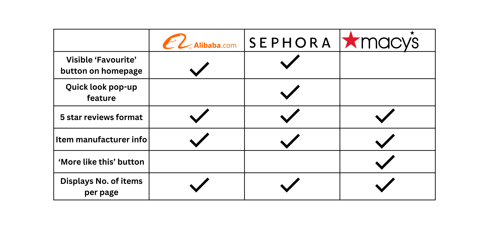

Welcome to my Portfolio
1. About
The task of the project was to develop a webpage which:
- Included the function of an aggregator (Shopping cart, Dashboard)
- Had filtering options (Price/Size)
- Had a sort function (A->Z, Lowest to Highest)
- Had a reset button which removed all filter and sort functions
2. How I ended up making a perfume eCommerce website
I absolutely love fragrances.
- I find it so interesting that it is thriving as a luxury category
- I have collected over 200 concentrates from across the world for my perfume making hobby
- And I wanted to pay tribute to this hobby by making a website to organize my favourite fragrances
- Something interesting I found was that this drive in fragrance demand has created a new market for highly influential fragrance influencers on social media
3. Website inspiration
3. Table of features and how it influenced my webpage

Brain storming features for my webpage
- I liked the clean white theme which showed contrast. It allowed the individual products to shine through
- I also wanted to include the number of items on each page so that I know how much each filter has narrowed down my choices
- The reference sites also showed the brands of the products they featured. I wanted to display it too and enable people to shop based on their favourite brands
- As a specialized fragrance site, I felt that users should be able to filter by fragrance note (ie. woody, floral, ambery)
- Moreover, since fragrances are often expensive I wanted to offer the option to filter by price range and sort by price
Summary of findings
All brands had a 'favourite' button though the Macy's favourite button was only visible once a specific product was selected and not on the home scren. I chose not to implement it since I was not building out a sign-in feature.
But in the case where websites have the sign-in feature, it creates stickiness by catering to a user's desire to "collect". There was also a use of contrast through a white-out background
which helped the products to shine through. It is also an effective means of reducing the risk of clashing brand colors especially for an eCommerce site that sells other brands' products.
The manufacturing information was also helpful in helping users sort the brands they trusted and all reference webpages had it.
All websites also had the display number of items and that enabled users to see quickly how many options they had.
Finalized website